Su gran rival , el Banesto , hizo gala de un planteamiento agresivo , pero a esta escuadra le sucede como a los equipos de fútbol que disponen de un brillante juego y nadie sabe marcar goles.
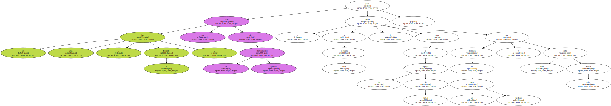Ataques ..
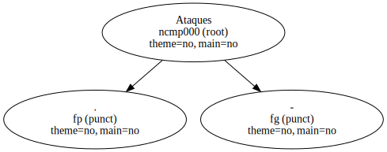Javier Mnguez mandó que sus corredores atacasen a partir de los tres puertos de montaña de ayer.

Aitor Garmendia , José Luis de Santos , Marino Alonso , Melchor Mauri y Carmelo Miranda fueron minando la etapa.
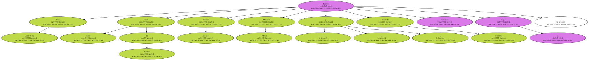Pero los " mapei " quebraron las intenciones de sus rivales.
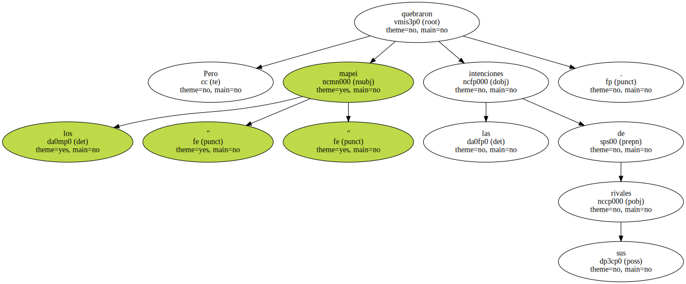Jon Unzaga , el mejor corredor ayer junto al ganador , tuvo fuerzas hasta los kilómetros finales para absorber a los " banesto ".
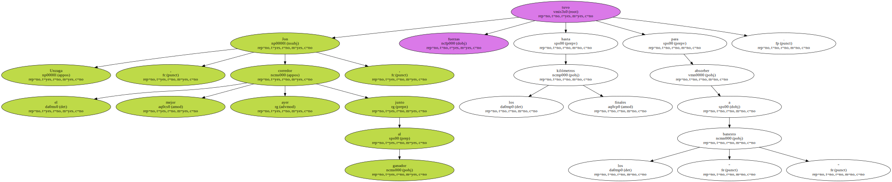Unzaga realizó una exhibición de lo que debe hacer un gregario para su líder.
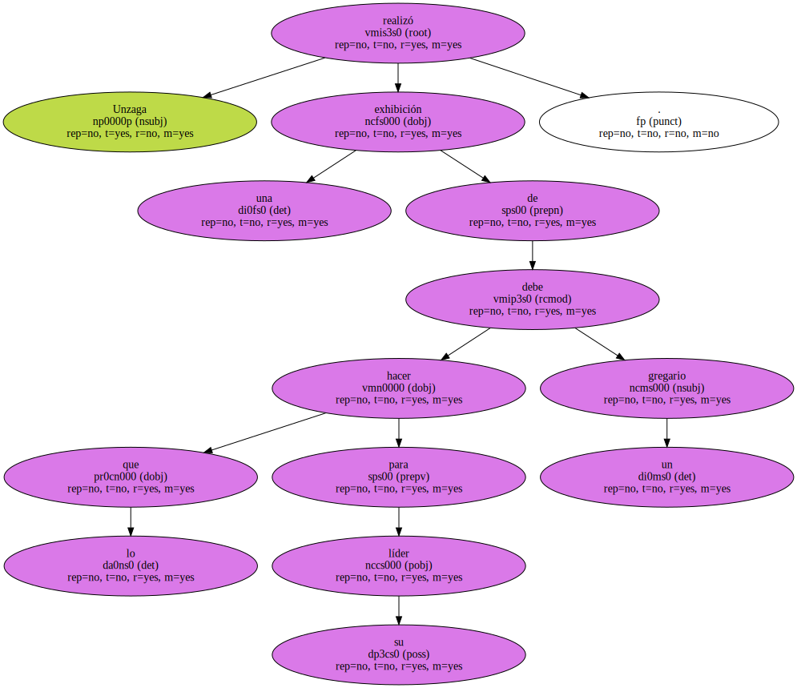El juego de ataques y defensa fue ganado por el grupo de Tony Rominger.
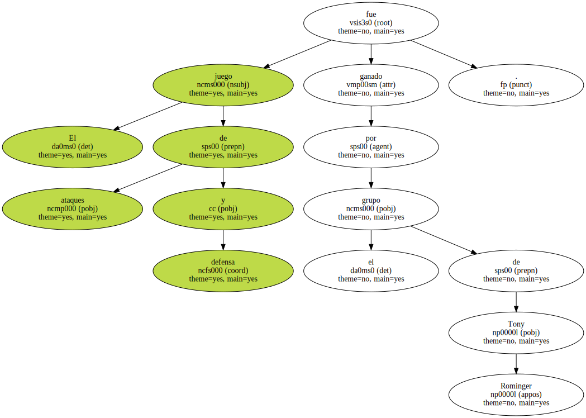En Banesto sólo aguantaron Mikel Zarrabeitia y , más retrasado , Pedro Delgado.
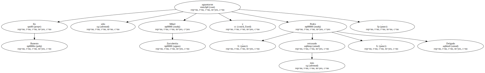Los demás siguen perdiendo minutos y puestos en la general.
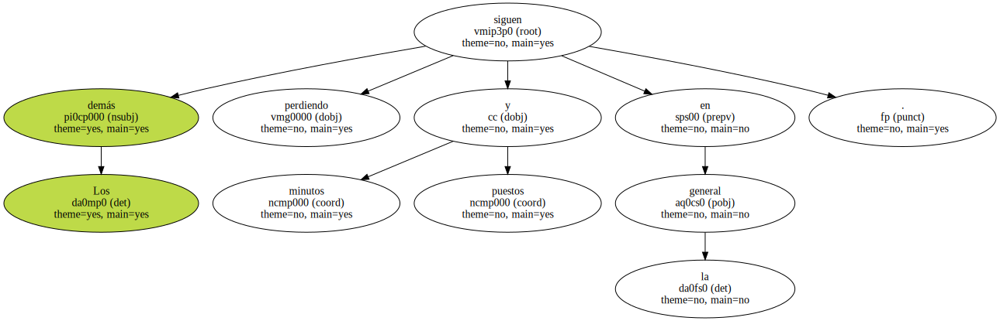La ONCE bastante tuvo con mantener a Alex Zülle en cabeza.
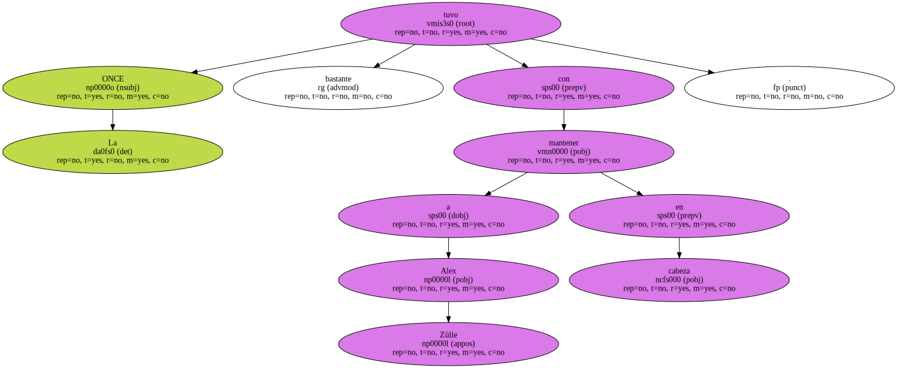Pero el suizo difícilmente atacará a Rominger en la montaña.
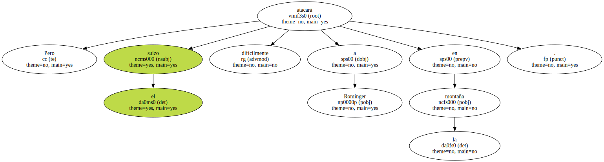Procura ir a rueda de su compatriota y se conforma con su lugar en la general.
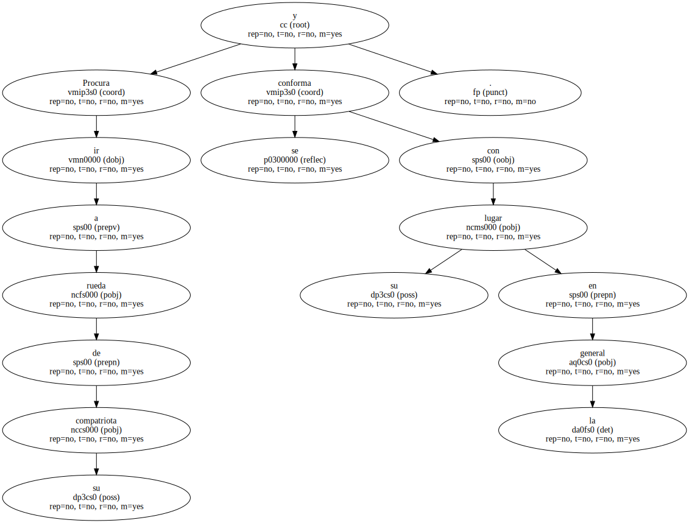